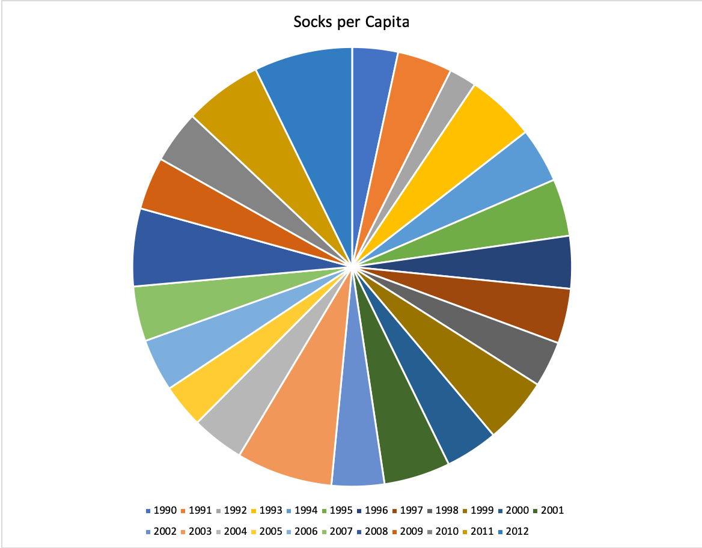
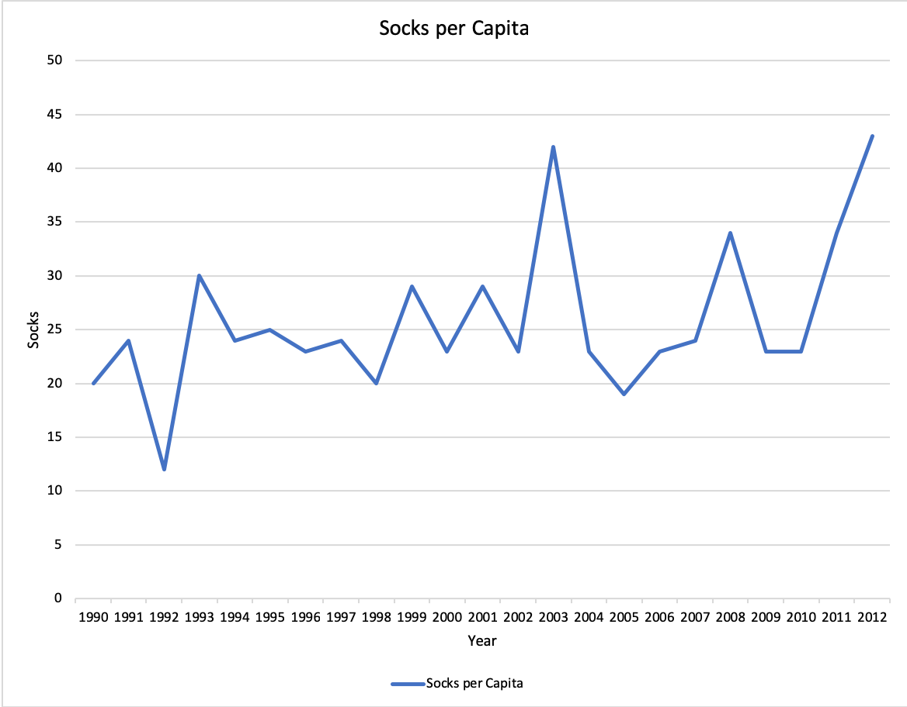
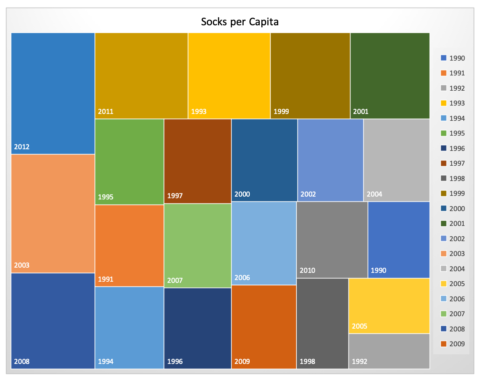

Visualization is effective because of how people tend to view patterns before they make sense of the information. When information is visualized, the eye attempts to make meaning from it. Many people do not like very abstract art because they feel as if they need to find obvious substance to the visualization. Others find abstract visualizations rich with emotional substance. Our eyes look and try to find meaning at everything we see, which is why visualization is effective. We barely have to do any extra work understanding the information being presented if the visualization is good.
There are a few important aspects of encoding data visually. The first is definitely
what type of data you are trying to convey. Choosing the correct form
to display the data is a good first step in creating a visualization.
If the dataset elements are part of a whole, a graph with area might be
easier for the eyes to generalize, while data that changes over time
may not be so great. See images:


It is very hard to decipher anything from the pie chart on first glance,
and may be worse then describing how the data changes over time in words.
The line chart does show how the data changes very easily over a period of time.

The mapping, however, does show which years had the highest socks per capita.
Cairo makes it clear that your choice is not clear until you try out
different types of visualizations. Cairo stresses how different graphics
complete different goals.
The first trade off that Cairo explained was between details and a general picture. Sometimes visualizations have to choose between the two, and different choices for the form can strike a balance between the two. Sometimes, choosing baselines for the data can lead to confusion for the viewer, but a 0 baseline can sometimes lead to useless empty space. Cairo speaks about the conventions to many types of visualizations and how new uses can lead to great ones, but also speaks about the reality that viewers may not understand a visualization perfectly. There are tradeoffs to using a classic visual form versus a newer exciting one, becuase of the commonality of some and automatic associations with the old.